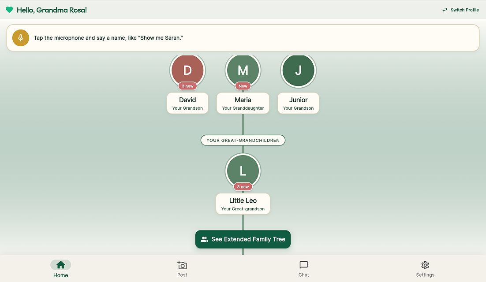
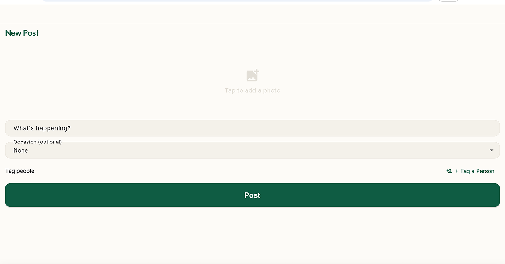
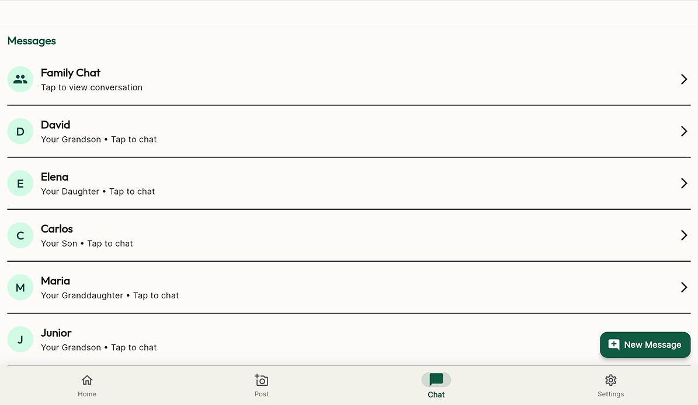
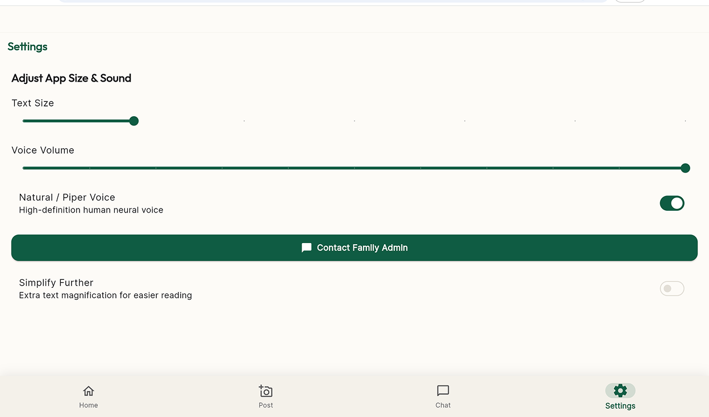

Case Study: FeelView - An App for the Elderly

Project Overview
FeelView is an elder-first social platform designed to help elderly family members stay connected with their loved ones. The app focuses on accessibility through simple navigation, large text, voice features, photo sharing, and an easy-to-understand family tree.
Problem Addressed
Some elderly users may find modern social media applications difficult to navigate because of complicated layouts, small text, and too many actions. FeelView was designed to provide a simpler way for elderly family members to interact with their family and stay connected.
Objectives
The main objectives of FeelView were to create an accessible social platform for elderly users, make family relationships easier to view and understand, and provide simple navigation and interactions. The project also aimed to support communication between elderly users and their family members while using technologies such as voice navigation and AI to improve the overall user experience.
Developer Role
My main role in the project was designing the Family Tree interface and its UI/UX. I focused on how family members would be displayed and organized so that their relationships could be easily understood. I also considered the needs of elderly users when designing the interface, particularly in terms of simplicity, readability, and clear navigation.
Technologies Used
Flutter — Used to build the FeelView mobile application and its user interface.
Gemini API — Used for AI-powered features, such as generating descriptions for shared photos.
Cloud Firestore — Used to store and manage family, user, and social interaction data.
Firebase Storage — Used to store and retrieve photos shared within the application.
Firebase Core & Authentication — Used to connect the app to Firebase services and manage user authentication.
Google Cloud Text-to-Speech — Used to read family comments and other text aloud for elderly users.
Screenshots:
The app includes:
- Log-in Page
- Home
- Posting
- Chatting
- Settings




Development Decisions
When designing the Family Tree, I focused on creating a simple and organized structure that would allow users to easily identify family members and understand their relationships. I used a clear visual hierarchy and avoided unnecessary elements to keep the interface from becoming confusing or overcrowded. The design also followed FeelView's elder-first approach by prioritizing clear information, simple interactions, and an accessible layout.
Challenges Encountered
One of the main challenges was designing the Family Tree so that multiple family members could be displayed without making the interface confusing or overcrowded. I also had to consider how the relationships between family members could be shown clearly while keeping the interface simple enough for elderly users to understand and navigate.
Solution
To address these challenges, I organized the Family Tree using a structured layout and clear visual hierarchy. Family members were positioned according to their relationships, making their connections easier to recognize. I also kept the design simple and removed unnecessary elements so that users could focus on the important information.
Results
The final Family Tree design provided FeelView with a clear and organized way to display family relationships. The design supported the application's goal of creating a more accessible social experience for elderly users. It also helped make family connections easier to view and understand within the application.
Lessons Learned
This project helped me understand the importance of designing interfaces around the needs of the target users. I learned that good UI/UX is not only about making an interface look good, but also about making information and interactions easy to understand. I also gained experience in designing an interface for an application and working with a team to contribute to a larger project.